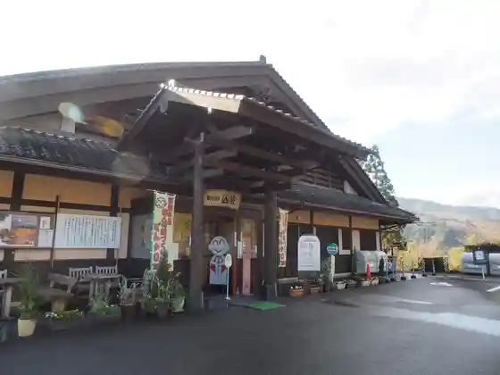
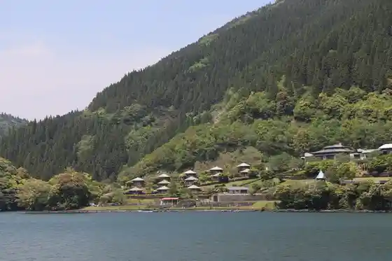
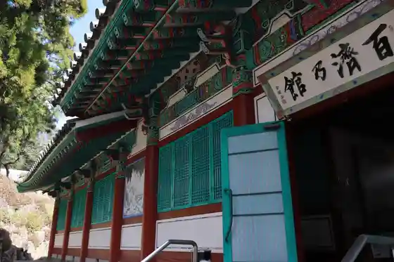
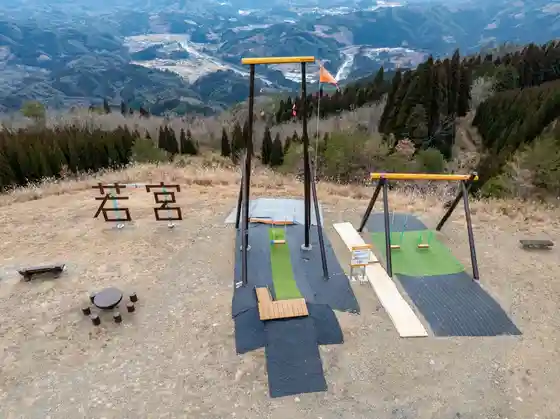

Nango Onsen Don Taro Baths (Nango Onsen Sanmu)
Misatocho, Miyazaki · 0982-59-0100 · Official / source link

Misatocho Reiku Land (Ishi Toge Reiku Land)
Misatocho, Miyazaki · 0982-68-2222 · Official / source link

Kudara no Kan
Misatocho, Miyazaki · 0982-59-0556 · Official / source link

Wakamiya Zoji Ro Park
Misatocho, Miyazaki · 0982-68-2522 · Official / source link

Nishi no Shosoin
Misatocho, Miyazaki · 0982-59-0556 · Official / source link
Kodo Shrine
Misatocho, Miyazaki · 0982-59-0556 · Official / source link
Koibito no Oka
Misatocho, Miyazaki · 0982-66-3603 · Official / source link
Oseri Falls
Misatocho, Miyazaki · 0982-66-3603 · Official / source link
Saigo Dam
Misatocho, Miyazaki · 0982-68-2522 · Official / source link
Kitago Sogo Koryu Center
Misatocho, Miyazaki · 0982-62-6205 · Official / source link
Nango Noringyo Mono Toreningu Center
Misatocho, Miyazaki · 0982-59-1605 · Official / source link
Mizu Kiyotani Furusato Mura Oto Campground
Misatocho, Miyazaki · 0982-59-0613 · Official / source link
Saigo no Village Kankyokaizen Center
Misatocho, Miyazaki · 0982-66-3608 · Official / source link
Matsugashita Momiji Rindo
Misatocho, Miyazaki · 0982-66-3603 · Official / source link